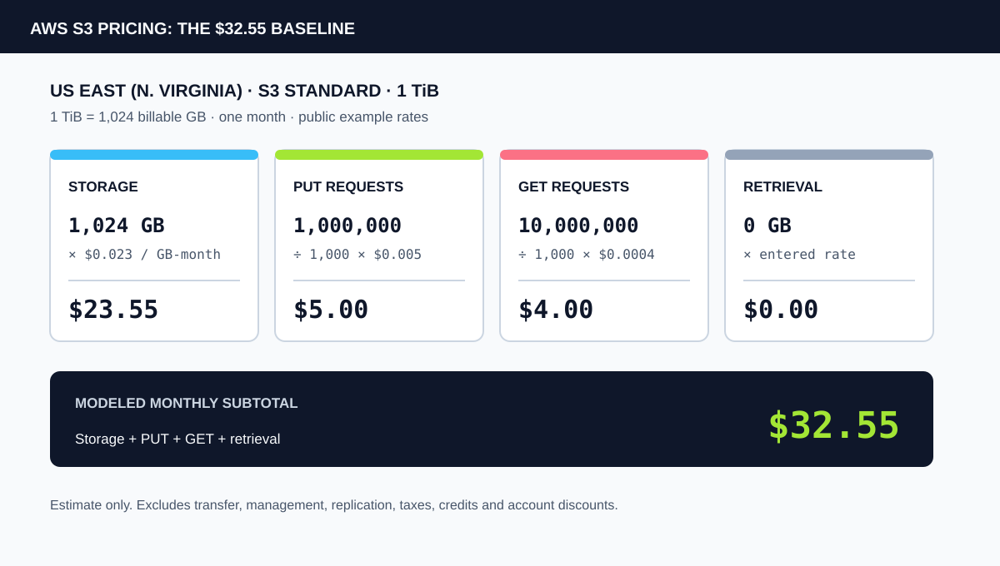
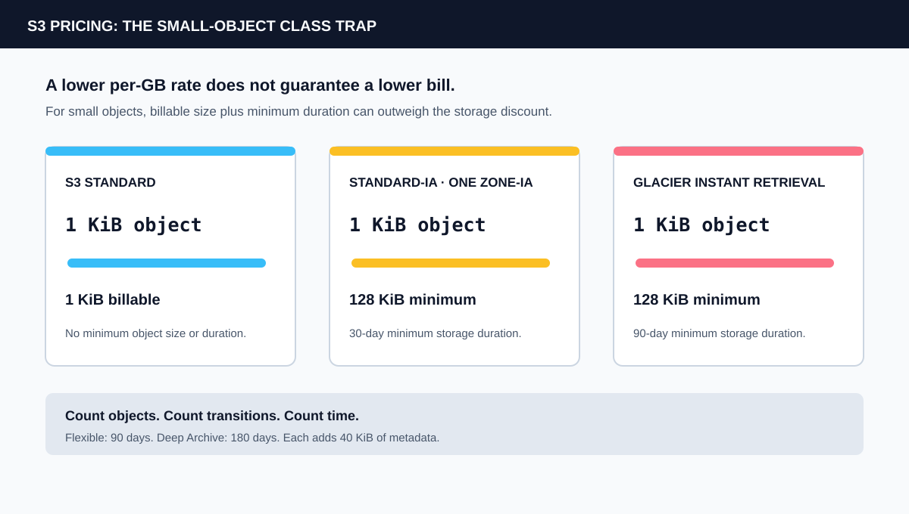

1. The Storage Rate Is Not the Bill
S3 pricing is a sum of usage meters. AWS lists storage, requests, retrieval, transfer, management, replication, plus transform and query features as separate cost components. The right question is not “What does a gigabyte cost?” It is “How many billable bytes, operations and transfers does this workload create in each class?”
The model below uses a general-purpose bucket in S3 Standard in US East (N. Virginia). Its storage input is 1 TiB, or 1,024 billable GB. The calculator uses the example storage rate of $0.023 per billable GB-month. Public AWS prices vary by Region, class and volume. The rate is an input, not a permanent constant.
2. Rebuild the $32.55 Worked Model
The existing S3 pricing calculator starts with stored volume, PUT count, GET count and retrieval. At the example rates, the arithmetic is:
| Line item | Calculation | Modeled charge |
|---|---|---|
| S3 Standard storage | 1,024 GB-month × $0.023 | $23.55 |
| PUT requests | 1,000,000 ÷ 1,000 × $0.005 | $5.00 |
| GET requests | 10,000,000 ÷ 1,000 × $0.0004 | $4.00 |
| Class retrieval | 0 GB × entered rate | $0.00 |
| Modeled subtotal | Storage + requests + retrieval | $32.55 |
Storage uses $0.023 per billable GB-month for the example volume tier. The request inputs use the tool's editable US East example rates. The example is deliberately 1,024 billable GB, not 1,000 decimal gigabytes. AWS's S3 billing FAQ demonstrates the binary conversion from 4 GB to 4,294,967,296 bytes.
At these inputs, requests contribute $9.00. That is about 28 percent of the subtotal before any data leaves the bucket. Raising GET volume from 10 million to 100 million adds $36.00 at the same example rate. The 1 TiB storage line remains $23.55. Requests now contribute $45.00, almost twice the storage line. This is how a request-heavy workload can outgrow the number everyone quotes per gigabyte.
The model prices request counts, not payload size. One GET of a large object and one GET of a small object are each one request for this line item. Their transfer and storage consequences differ. So does a workload that repeatedly lists millions of keys. Browsing S3 in the console can also create billable GET, LIST and other requests.
3. Object Size Can Reverse the Storage-Class Choice
S3 Standard has no minimum billable object size. Standard-IA and One Zone-IA bill at least 128 KiB per object and impose a 30-day minimum duration. Glacier Instant Retrieval has a 128 KiB minimum and a 90-day minimum. Glacier Flexible Retrieval has a 90-day minimum. Deep Archive has a 180-day minimum. Both archive classes add 40 KiB of metadata per object: 8 KiB billed at S3 Standard rates plus 32 KiB billed at the applicable Glacier rate. These details matter when a pipeline creates millions of small records.

For a 1 KiB object in Standard-IA, the 128 KiB floor represents 128 times the payload in billable storage units before the 30-day duration rule. A class can still win when data stays long enough and is read rarely. It can lose when a job writes tiny objects, transitions each one, then deletes or overwrites them early.
Intelligent-Tiering has a different constraint. Objects under 128 KiB are not monitored for automatic tiering and remain in Frequent Access. For Glacier Flexible Retrieval or Deep Archive, each archived object also carries the documented metadata overhead. Count objects and transitions, not only terabytes.
4. A GET Request and a Retrieval Fee Are Different Meters
Every class has request pricing. Some less-frequent and archive classes add per-GB retrieval pricing. Standard-IA, One Zone-IA and Glacier Instant Retrieval charge retrieval when data is read. Intelligent-Tiering has no retrieval fee for its standard and bulk retrieval paths, though its monitoring charge and optional accelerated archive retrieval have separate rules.
Restoring an object from Glacier Flexible Retrieval or Deep Archive is not the same as a normal Standard GET. A restore creates a temporary accessible copy for a chosen period. During that window, storage can be billed for both the archive and the restored Standard copy. The archive still has its minimum-duration rules.
Lifecycle is a request stream too. A rule that moves ten million objects can generate per-object transition requests. If objects are then expired before a class minimum has elapsed, the remaining minimum-duration charge can still apply.
5. Transfer, Versioning and Features Sit Outside the Base
Data transfer is a separate line. AWS lists a first 100 GB per month internet-transfer allowance aggregated across AWS services and Regions, with China and GovCloud exceptions. Same-Region transfers between S3 and AWS services plus transfers to CloudFront have stated exceptions. Cross-Region transfer, transfer acceleration and internet egress follow their own pricing.
This is why the S3 tool leaves transfer out. Use the Cloud Egress Cost Calculator with the applicable billable volume and rate. Do not subtract a free allowance twice if other services in the account already used it.
Versioning changes retention. An overwrite creates a new full object version. The older version stays billable until a noncurrent-version lifecycle rule expires it or a version-specific permanent delete removes it. In a versioned bucket, a current-version expiration rule generally adds a delete marker rather than removing older versions. Cross-Region Replication creates destination storage plus request and transfer charges. S3 Inventory, Storage Lens, Object Tagging, Intelligent-Tiering monitoring, S3 Select, S3 Tables and S3 Vectors add distinct cost dimensions. They are outside the $32.55 example.
6. Reconcile the Model With the Bill
Use AWS Cost and Usage Reports for billed cost. S3 usage reports can break activity out by operation, usage type, Region, resource, request count and transfer volume. AWS lets you aggregate its S3 usage report hourly, daily or monthly. That is the bridge from application telemetry to the invoice.
For a data pipeline, retain four separate counters: average billable bytes by storage class, request counts by operation, bytes retrieved from charged classes and bytes transferred by destination. Add object counts for Intelligent-Tiering and archive workloads. Keep lifecycle transitions and retained noncurrent versions visible. A single “bucket size” metric cannot explain every line.
The Buildopsy calculator models storage, PUT requests, GET requests and entered retrieval. It accepts one editable rate for each line. It does not choose a class, apply volume tiers automatically, inspect an AWS bill, or add transfer. Enter your Region's rates, then model the omitted line items separately. For an account-specific estimate, use the AWS Pricing Calculator.
7. The Verdict: Price the Access Pattern
The storage-class rate is a useful lower bound, not a workload estimate. A small-object archive can pay for unused minimum bytes. A hot bucket can pay more for operations or transfer than for storage. A versioned bucket can retain every overwritten byte until lifecycle rules remove it.
Start with the workload shape: object-size distribution, change rate, reads per object, retrieval volume, retention period and destination. Price each meter against the actual Region and class. Run the first four meters through the S3 calculator, add transfer separately and reconcile the result against CUR line items. The bill hides in the boundary between stored bytes and the work required to use them.
For a disclosed data-lake architecture with an explicit modeled bill, see Notion: The Workspace That Ate the Warehouse.
Frequently Asked Questions
How much does 1 TiB of S3 Standard storage cost?
At the example US East rate of $0.023 per billable GB-month, 1,024 billable GB costs $23.55 for a full month of storage. Requests, retrieval, transfer and other charges are extra.
Does the Buildopsy S3 calculator include data transfer out?
No. It models storage, entered PUT and GET requests, plus entered retrieval. Use the Cloud Egress Cost Calculator separately with the rate and allowance that apply to your account.
Why can a cheaper S3 storage class cost more overall?
Less-frequent classes can add minimum billable object sizes, minimum storage durations, retrieval fees, restore requests or lifecycle transition charges. Compare the expected access and retention pattern, not only the per-GB rate.
Sources and Method
The worked arithmetic uses the editable US East example values in the Buildopsy S3 calculator. AWS prices vary by Region, class, volume tier and enabled feature. The examples are estimates, not a customer invoice. AWS's live price card and billing documentation control for real budgets.
- AWS: Amazon S3 pricing
- DevZero: US East rates fetched from the AWS Price List API (updated September 28, 2026)
- AWS: S3 billing FAQ and binary storage-unit example
- AWS: Billing reports for Amazon S3
- AWS: Usage reports for Amazon S3
- AWS: Understanding S3 storage classes
- AWS: How S3 Versioning works
- AWS: Minimum storage duration charges